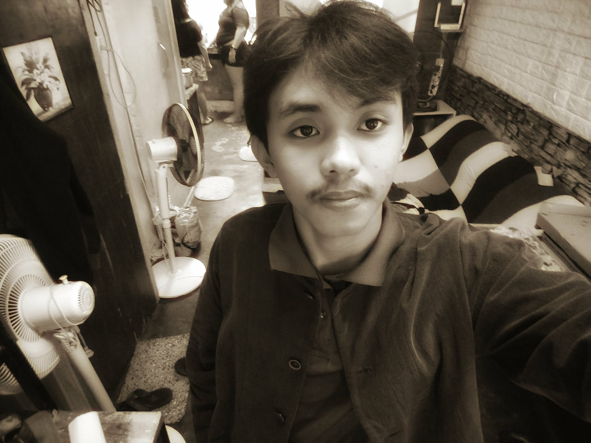

HOLA!! I'M RUPERTH VESINA
I am a passionate artist based in the Philippines. I love creating digital art, pubmats, and short video content when i have a free time. This portfolio is a collection of my art relatedcreative works.
Feel free to explore my portfolio on the homepage and reach out through the Contact page if you'd like to collaborate, inquire or even commission a piece:)
" Creativity is intelligence having fun. "— Albert Einstein
This reminds me that great art isn't just about technical skill, it's also our curiosity, imagination, and the courage to CREATE SOMETHING NEW.
MAIN OBJECTIVE
Every project featured here reflects my commitment to quality, creativity, and continuous growth
as an artist. Whether it's a bold illustration, a detailed design concept, or an experimental piece
, each work tells a story.
I'm actively seeking opportunities where my creative skills and artistic
vision can contribute to a team, brand, or project that values original, thoughtful design.